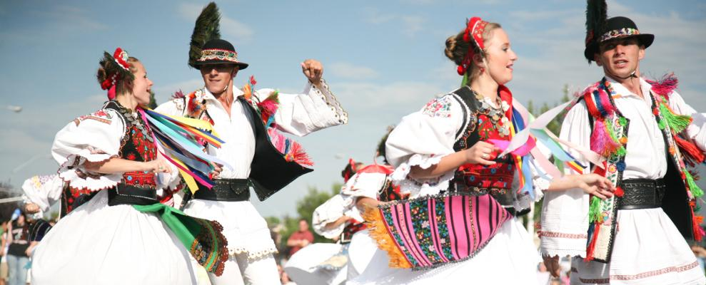

Folk dancing is a traditional dance form that evolved among the common people of a specific region or country. Unlike ballet or modern dance, folk dances are usually not governed by a central agency, but rather passed down through generations. They often reflect the daily lives, labors, and celebrations of the community.
Understanding Folk Dance
Popular Regional Styles
- Kolo: A South Slavic circle dance from the Balkans.
- Ceilidh: Traditional social folk dances from Scotland and Ireland.
- Flamenco: A highly expressive, solo Spanish dance known for footwork.
- Hula: A Polynesian dance form accompanied by chant or song.
| Region | Dance Name | Primary Instrument | Formation |
|---|---|---|---|
| Ireland | Step Dance | Fiddle / Tin Whistle | Solo or Square |
| Greece | Sirtaki | Bouzouki | Line or Circle |
| Germany | Schuhplattler | Accordion | Couples |
Visual & Auditory Heritage
Sample Folk Rhythm (Audio):

Performance Highlights (Video):
Join the Movement
If you are interested in learning, check out the Folk Dance Wiki for more information on local clubs and global festivals.